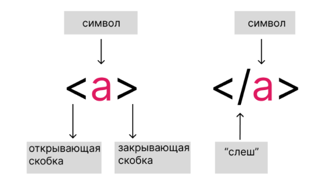

1.1 История создания интернета
Интернет — информационно-коммуникационная сеть и всемирная система объединённых компьютерных сетей для хранения и передачи информации.
Раньше упоминался как Всемирная сеть и Глобальная сеть, а также просто Сеть. Построена на базе стека протоколов TCP/IP. На основе Интернета работает Всемирная паутина (World Wide Web, WWW) и множество других систем передачи данных. К началу 2020 года число пользователей достигло 4,5 млрд человек, что составляет более 50% от всех жителей планеты Земля. Во многом это было обусловлено широким распространением сотовых сетей с доступом в Интернет стандартов 3G, 4G и 5G, развитием социальных сетей и удешевлением стоимости интернет-трафика.
История Интернета началась с разработки компьютеров в 1950-х годах и появления научных и прикладных концепций глобальных вычислительных сетей почти одновременно в разных странах, в первую очередь в научных и военных лабораториях в США, Великобритании и Франции. Аналогичные разработки существовали и в СССР, но были засекречены военными, а проект гражданской сети ОГАС (1959) был искусственно заторможен. Тем не менее, в 1978 году в СССР появляется совместимая с Интернетом Академсеть, которая с 1981 года была подключена к формировавшемуся тогда международному Интернету.
Принципы, по которым строится Интернет, впервые были применены в сети ARPANET, созданной в 1969 году по заказу американского военного агентства DARPA. Используя наработки ARPANET, в 1984 году Национальный научный фонд США создал сеть NSFNET для связи между университетами и вычислительными центрами. В отличие от закрытой ARPANET подключение к NSFNET было достаточно свободным, и к 1992 году к ней подключились более 7500 мелких сетей, включая 2500 за пределами США. С передачей опорной сети NSFNET в коммерческое использование появился современный Интернет.
До 1980-х годов компьютерные сети были доступны в основном сотрудникам специализированных учреждений, а в 1980-х годах начинается распространение персональных компьютеров, в частности, домашних компьютеров, в частном пользовании, что породило массовый спрос на сети (которому предшествовала ручная передача носителей). Если специалисты в основном использовали сети для научно-производственных задач, то частные лица прежде всего проявили интерес к личному общению и получению популярных текстов и прочих файлов для своих ПК. Первой массовой сетевой технологией, решавшей эти задачи, стала электронная почта, на её базе в 1980 году была создана первая массовая глобальная сеть обмена компьютерной информацией — Usenet.
В каком году, впервые были применены в сети ARPANET принципы, по которым строится Интернет?
Отправить
1.2 IP-адрес
Каждый компьютер, подключённый к Интернету, получает свой уникальный 32-битовый идентификатор, называемый IP-адресом. Таких адресов более 4 миллиардов (223 - 1 =4 294 967 295). Человеку, в отличие от технических систем, сложно работать с длинными цепочками из нулей и единиц. Поэтому вместо 32-битового представления мы используем запись IP-адреса в виде четырёх десятичных чисел (от 0 до 255), разделённых точками, например 204.152.190.71.Для осуществления такого перехода 32-битовая запись разбивается на четыре части (по 8 битов), каждая из которых как 8-разрядное двоичное число переводится в десятичную систему счисления.
Объединение компьютерных сетей в единую всемирную структуру стало возможным благодаря протоколу IP, реализующему адресную систему, в которой каждому компьютеру присваивается индивидуальный адрес (IP-адрес, состоящий из 4 групп цифр, разделенных точками).
Каждая из сетей, входящая в Интернет, подсоединена к единой структуре через маршрутизатор – специальное аппаратное или программное устройство, производящее фильтрацию, сортировку и перенаправление пакетов данных компьютерам получателей, исходя из их IP-адресов. Такая система позволяет передавать информацию из одного компьютера на другой в пределах целого Интернета.
IP-адрес — это сокращение от фразы Internet Protocol Address, что означает — уникальный сетевой адрес.
Иными словами когда вы отправляете письмо (обычное, а не электронное), то указываете точный адрес человека — страну, город, улицу, дом и, наконец, ФИО. В этом случае письмо, по идее, должно дойти без проблем.
Так и в компьютерной сети IP-адрес точно таким же образом идентифицирует ваш (или любой другой) компьютер. Каждый компьютер в сети должен иметь свой уникальный адрес, чтобы информация с другого компьютера попала именно ему. Этот уникальный адрес и называется IP-адрес.
Причем справедливо это будет для любой сети: от локальной домашней до сети Интернет. Не важно сколько в ней будет компьютеров — два, десять или десять тысяч. Это может быть и беспроводная домашняя сеть или корпоративная сеть компании. В любом случае, все компьютеры должны иметь уникальный IP.
В каком году, впервые были применены в сети ARPANET принципы, по которым строится Интернет?
Отправить
1.3 Доменная система имен (DNS)
DNS (Domain Name System «система доменных имён») — компьютерная распределённая система для получения информации о доменах. Чаще всего используется для получения IP-адреса по имени хоста (компьютера или устройства), получения информации о маршрутизации почты и/или обслуживающих узлах для протоколов в домене.
Распределённая база данных DNS поддерживается с помощью иерархии DNS-серверов, взаимодействующих по определённому протоколу.
Основой DNS является представление об иерархической структуре имени и зонах. Каждый сервер, отвечающий за имя, может передать ответственность за дальнейшую часть домена другому серверу (с административной точки зрения — другой организации или человеку), что позволяет возложить ответственность за актуальность информации на серверы различных организаций (людей), отвечающих только за «свою» часть доменного имени.
Начиная с 2010 года в систему DNS внедряются средства проверки целостности передаваемых данных, называемые DNS Security Extensions (DNSSEC).
2.1 Всемирная паутина
Всемирная паутина, или WWW,- это сервис, с помощью которого пользователи сети получают доступ к информационным ресурсам, хранящимся на компьютерах в разных частях света. Основой WWW являются web-страницы и web-сайты, на которых информация представлена в виде гипертекстовых и гипермедийных документов.Вы уже неоднократно путешествовали по Всемирной паутине с помощью браузеров, осуществляя переходы по гиперссылкам; искали ответы на интересующие вас вопросы с помощью поисковых систем по ключевым словам.
Сущестует ещё одна возможность поиска нужного документа в Интернете это использование адреса документа. Адрес документа в Интернете eгo URL (Uniform Resource Locator - универсальный указатель ресурса) состоит из следующих частей:
- название протокола со знаками :// в конце названия;
- доменное имя сервера со знаком / в конце имени;
- полное имя файла на сервере, где он находится.
Рассмотрим пример адреса (URL):

Первая часть адреса - это имя протокола. Оно определяет тип документа. Запись http:// указывает на то, что это Web-страница (протокол HTTP - Hyper Text Transfer Protocol - протокол передачи гипертекстовых файлов). Для других типов документов протоколы могут быть другими.
Вторая часть адреса - это доменное имя сервера, на котором хранится страница.
Третья часть адреса- полное имя файла, включающее путь к файлу, т. е. все каталоги, в которые следует последовательно зайти, чтобы открыть требуемый файл.
2.2 HTML
HTTP (Hyper Text Transfer Protocol) - протокол передачи гипертекста.
HTTP - протокол (то есть регламент, набор условных обозначений), который устанавливает определённый формат общения между клиентом и сервером. Суть его заключается в том, что клиент посылает запросы на URL, а сервер ему отвечает.
Клиент - тот, кто посылает запросы. Когда ты открываешь сайт, ты - клиент.
Сервер - тот, кто принимает запросы и отвечает на них. Когда ты открываешь сайт Яндекс, сервер Яндекса посылает веб-страничку - отвечает на запрос.
Разберем что такое "послать запрос"? "Говоря простыми словами" это означает отправить по сети сообщение с каким-нибудь требованием. Это работает так:
- Посылаете запрос;
- Между клиентом и сервером устанавливается соединение;
- Сервер формирует ответ, посылает его клиенту;
- Соединение закрывается.
Так вот, протокол передачи гипертекста. "Текста", потому что сервер отвечает на запрос текстом определённого формата. А так как любые данные можно представить в виде текста, то получается, что через HTTP можно пересылать всё: картинки видео.
HTML-элементы
HTML - код состоит из символов, которые помещены между двух угловых скобок <>.Всё помещенные между двумя угловыми скобками символы называются HTML-элементами. Элементы, как правило состоят из двух тегов : открывающего и закрывающего. Закрывающий тег отличает косая черта / "слеш". Каждый HTML-элемент сообщает браузеру какую-либо информацию о тексте, помещенном между открывающим и закрывающим тегами.

2.3 Структура HTML документа
Тег <!DOCTYPE>
<html>, <head> и <body>
Следующий урок